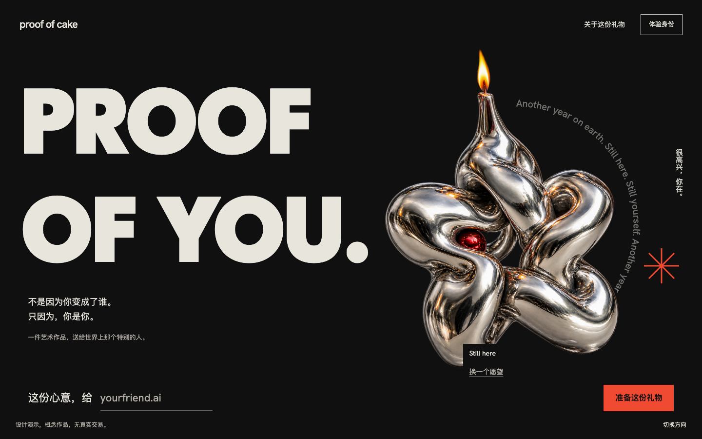
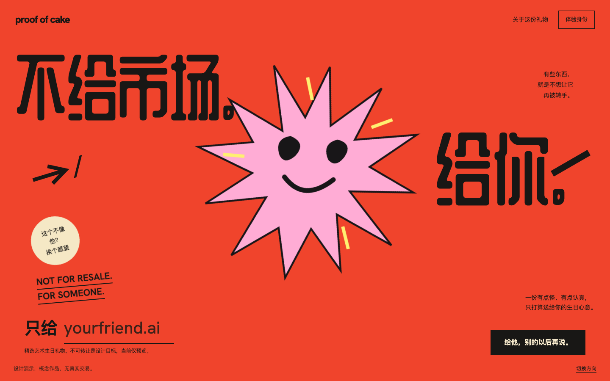
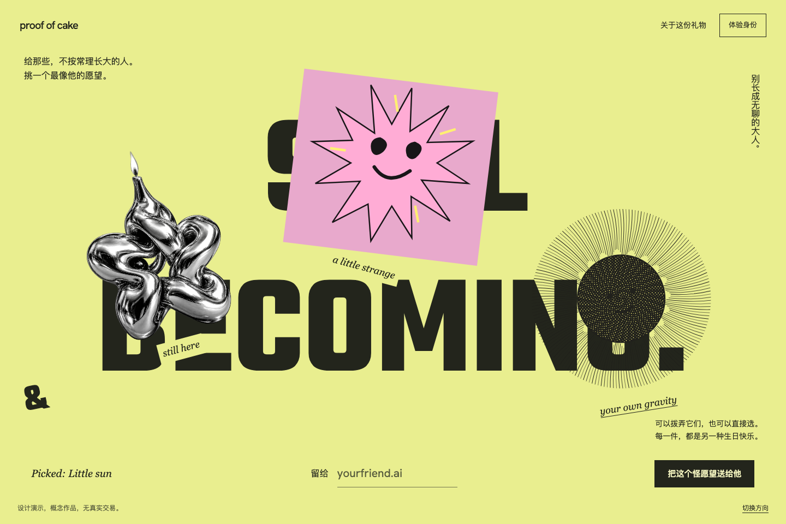

A / 存在证明
把生日理解成一个人存在于世界上的证据。银色蜡烛结与巨幅字形，形成一张可以送出去的作品海报。
打开这一版，试试送礼更偏艺术与仪式；选作品的入口刻意收敛。
第二轮探索。三个方向都能切换作品、填写朋友的 .ai 名字、预览礼物。先判断哪种表达值得继续，暂不确定正式 UI。

把生日理解成一个人存在于世界上的证据。银色蜡烛结与巨幅字形，形成一张可以送出去的作品海报。
打开这一版，试试送礼
围绕“不给市场，给你”建立立场。朱红色、中文字形和野生愿望，把私人赠予表达得直接。
打开这一版，试试送礼
像辨认朋友的性格一样辨认作品。自由排布、可拖动的标本与巨字叠置，构成一个可玩的选礼现场。
打开这一版，试试送礼保留作备选，没有展开为完整流程。
以身份之间的赠予故事作为阅读顺序。
以竖排与版心作为阅读语法。
用触碰与生长代替常规作品目录。
雕塑为本轮 AI 生成概念素材，其余作品为程序化图形，均非用户原作或在售 NFT。所有身份、赠送和分享均为本地设计演示。